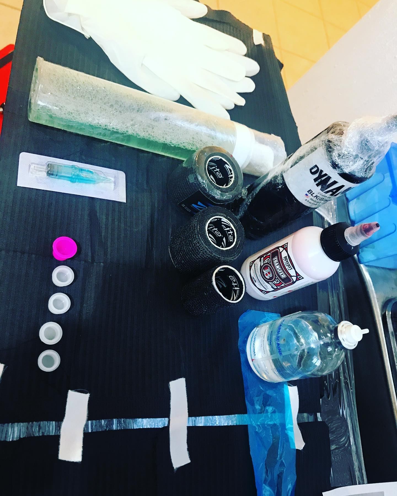
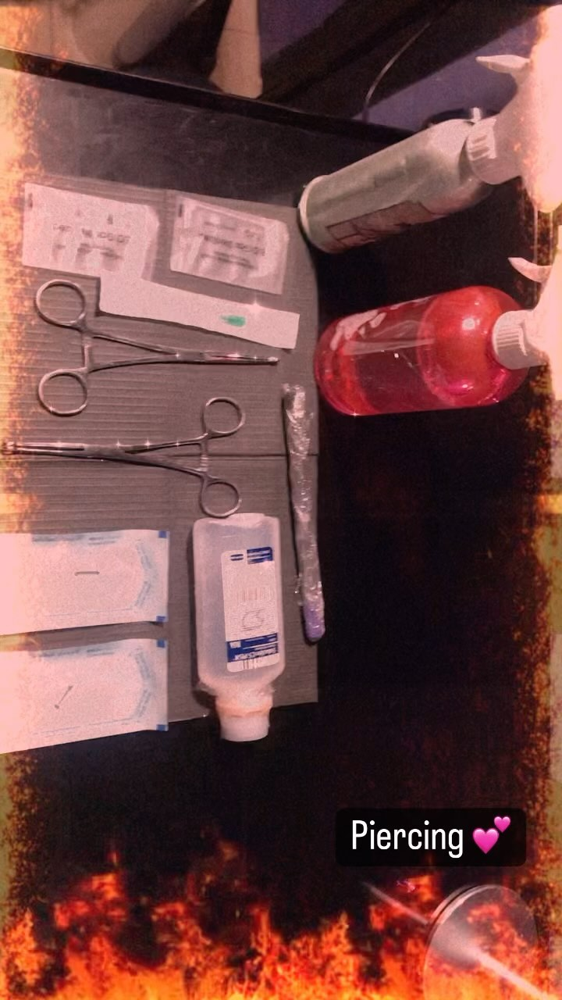

"EQUIPO ESTERILIZADO"


“CUIDADOS Y RECOMENDACIONES PARA UNA BUENA SANACION DE TU TATUAJE ”
”RECUERDA”
Para que tu tatuaje cicatrice bien el 80%
”DEPENDE DE LOS CUIDADOS QUE LE TENGAS ”
“DURANTE LOS PRIMEROS 15 DIAS “
Retira la protección que te haya puesto tu tatuador entre 3 y 5 horas después del tatuaje.
Lava unicamente con jabón neutro y agua fría, utiliza las yemas de los dedos para lavar tu tatuaje, jamás lo talles ni rasques.
Por ningún motivo uses jabones perfumados.
Seca con una servitoalla o paño limpio dando pequeños toques, jamas rasques ni talles el tatuaje.
Humecta tu tatuaje despues del lavado utiliza una ligera capa de pomada o vitaminas especiales para tatuajes, Por ningún motivo apliques cremas corporales, pomadas no especializadas ni aceites.
No olvides realizar este proceso de 2 a 3 veces al día.
Durante los siguientes 30 días”
Evita exponer tu tatuaje al sol
Evita lugares como albercas, playas, saunas o jacuzzi.
Evita hacer deportes o ejercicio que provoque sudoración o fricción en el tatuaje.
Durante el proceso de cicatrización tu tatuaje comenzara a dar comezón evitar rascarte o retirar costras.
"CONTACTOS"
5546388815
Bob_koree
Böb köre
UBICACION
BÖB KÖRE TATUAJES 2019. | © TODOS LOS DERECHOS RESERVADOS. |